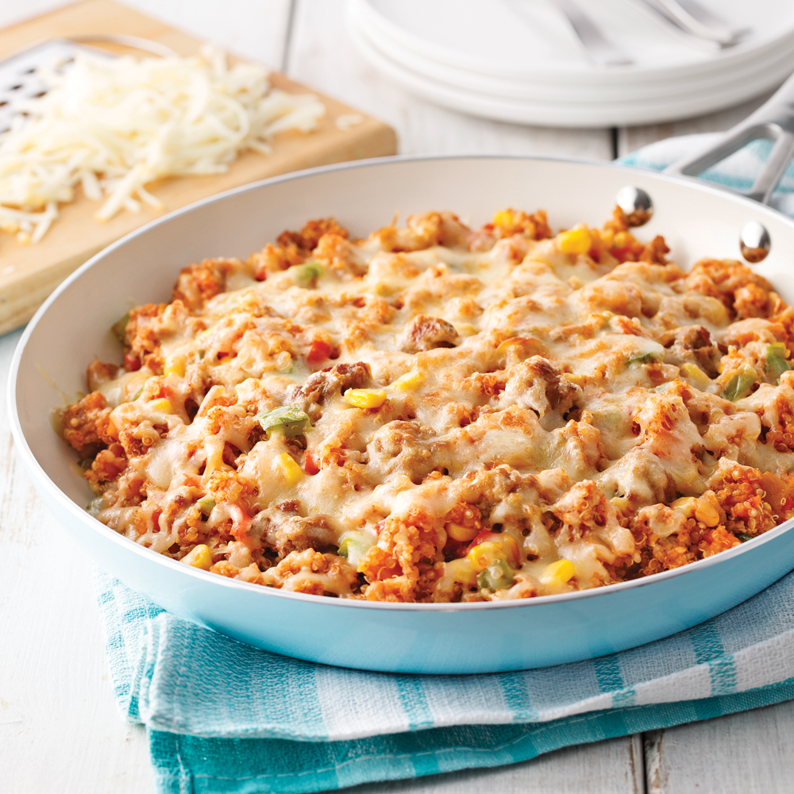

Quinoa Chili One Pot

Description
One pot of quinoa, grounded pork, salsa, shredded cheese, corn, and diced carrots, onions and celery.
Ingredients
- Grounded pork, 1 lb
- Quinoa, 1 cup
- Salsa, 1 1/2 cup
- Chili diced vegetables, 2 cups
- Shredded cheddar, 1 1/2 cup
- Chicken stock, 2 cup
- Chili seasoning, 1 tbs
Steps
- In a oven-safe skillet, heat up some olive oil on medium heat. Cook the pork for 5-6 minutes.
- Add the seasoning, then the quinoa, salsa, vegetables and chicken stock. Stir. Bring to a boil, cover
and simmer for 10-12 minutes, until the quinoa is cooked.
- Garnish with shredded cheddar. Gratin in the oven for 2-3 minutes.